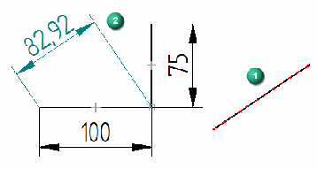
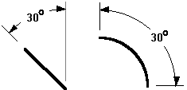
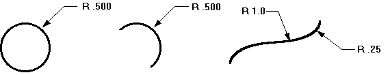

Smart Measure command bar
The options that are available on the Smart Measure command bar vary depending on whether you are measuring on drawings or in models.
- Format group options
-
- Dimension Style Mapping
-
Specifies that the setting on the Dimension Style page of the Options dialog box determines the dimension style. When you set this option, Dimension Style is unavailable.
- Dimension Style
-
Lists and applies the available dimension styles. This option is unavailable when Dimension Style Mapping is enabled.
- Text Scale
-
Applies a scale value to the current text height. The default is 1.0.
- Linear Round-Off
-
Sets the round-off for the value. This option is sensitive to the unit setting (decimal or fractional) and displays values as appropriate for the unit. This option is also sensitive to the elements being measured and displays values accordingly.
- Driving
-
Not available for the Smart Measure command.
- Properties group options
-
The options in the Properties group on the Smart Measure command bar are available depending upon what 2D elements you select to measure.
- Dimension Axis
-
Sets the dimension axis for a dimension. This option is not available unless the Use Dimension Axis option is selected. When you select the Dimension Axis button, you cannot place a dimension until you select a linear element that defines the dimension axis you want.
- Orientation
-
Use this Orientation option
To place
Automatic
Dimensions based on the orientation of the element selected. This option is the default.
Horizontal/Vertical
Dimensions that are parallel or perpendicular to the horizontal edge of the drawing sheet or reference plane.
By 2 Points
Dimensions that are parallel or perpendicular to the theoretical line between the two points you are dimensioning.
Use Dimension Axis

Dimensions that are parallel or perpendicular to the element that you select as the dimension axis using the Dimension Axis option on the command bar.
Use this option when the default horizontal or vertical axis is not appropriate for the geometry that you are dimensioning or when you want the dimensions to be placed in reference to a different element. After you select the dimension axis (1), the next dimension is placed parallel to the axis (2).
- Length
-
Displays a linear measurement for the following:
-
The length of a line.
-
The arc length of an arc.
-
The horizontal or vertical distance between the end points of a line.

-
- Angle
-
Displays an angular measurement for the angle of a line or the sweep angle of an arc.

- Radius
-
Displays a radial measurement for the following:
-
Arc
-
Circle
-
Ellipse
-
Curve

-
- Diameter
-
Displays a diameter measurement for an arc or circle.

- Diameter Normal
-
Measures the diameter of elements in the normal plane. Like PMI dimensions, this option is available when measuring elements in a model.
- Tangent
-
Specifies that you want to show the measurement tangent to the selected elements. The tangent point on the element closest to the selected point is used. If you select only one of two elements for a tangent measurement, it is measured from the keypoint of the non-tangent element to the tangent of the element closest to where you click. If you select both elements for tangent measurements, the measurement is from the tangent point closest to where you click on each element. In either case, if necessary, Solid Edge extends the element to preserve this relationship.
If you selected keypoints with the Tangent button depressed, the keypoints take precedence and a tangent measurement is not shown.
- Counterclockwise
-
Changes the measurement from clockwise to counterclockwise from the origin. This option is available for angular coordinate measurements only.
- Major/Minor
-
Displays only the major (A) and minor (B) angles when set.

When this option is cleared, you can choose between four orientation options (quadrants) for angular measurements.

- Jog
-
Offsets the projection line of a radial measurement, or removes all the jogs from a coordinate measurement.
- Half/Full
-
Changes between half and full. When you select or clear this option, the symmetric diameter appears as half or full.
- Tolerance group options
-
Options in the Tolerance group are not available for the Smart Measure command.
- Other group options
-
The following options are available when measuring in models.
- Set dimension plane
-
Sets the active dimension plane for the creation of model measurements. The dimension plane controls how values are calculated and how the measurement text is displayed.
- Lock dimension plane (F3 to unlock)
-
Lets you specify a dimension plane by clicking a planar face or reference plane. The plane remains locked until you unlock it by pressing F3.
- Keypoints
-
When displaying a model measurement, you can select the type of keypoint to measure to. The default 3D keypoint filter option selects only the centers of circles and arcs or endpoints of edges.
How do I
Measure a distanceMeasure a length or a sum of lengths
Measure an area
Measure elements automatically
Look up more details
Smart Measure commandMeasure Distance command
Measure Distance command bar
Measure Area command
Measure Area command bar
Measure Total Length command
Measure Total Length command bar